UNSERE LEISTUNGEN
Wir bieten Ihnen ein umfassendes Spektrum an Dienstleistungen rund um Umwelt, Geologie und Bau. Mit Erfahrung, Fachwissen und Leidenschaft begleiten wir Sie von der Beratung bis zur Umsetzung.
 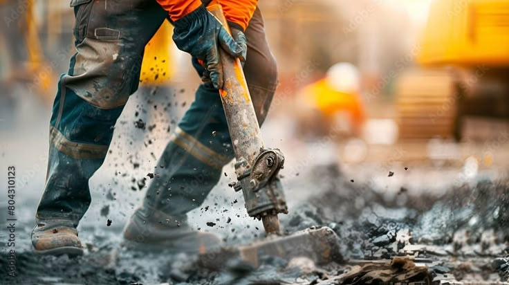
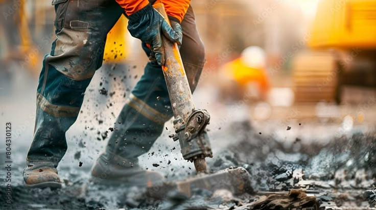
 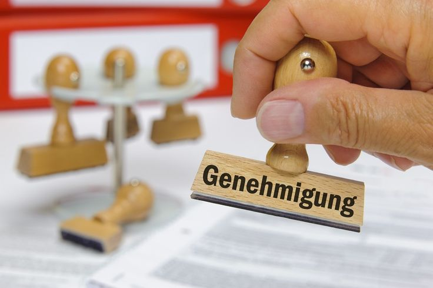
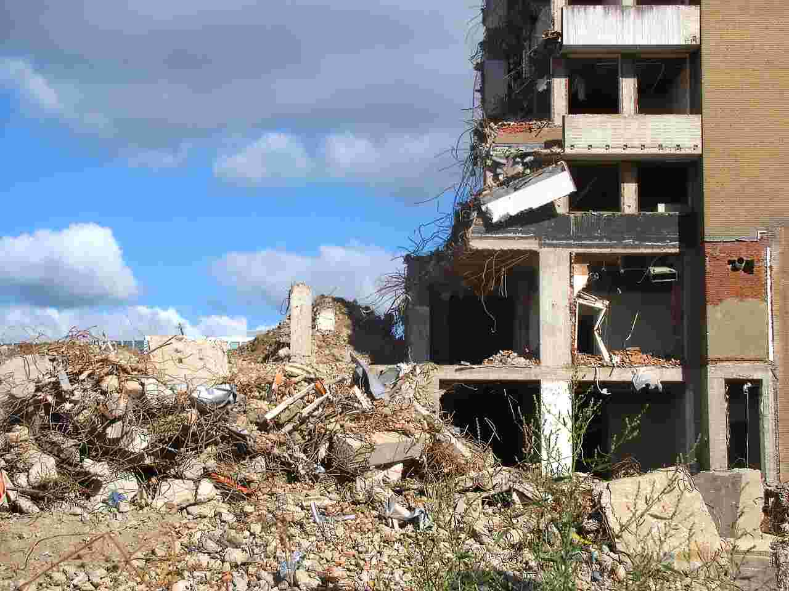
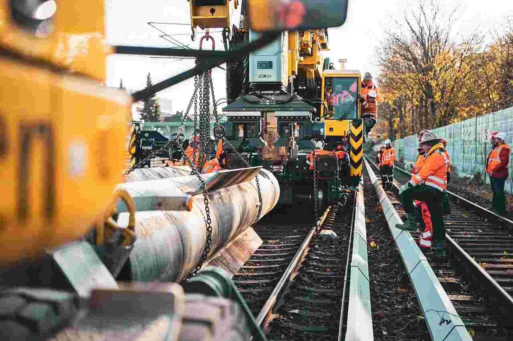
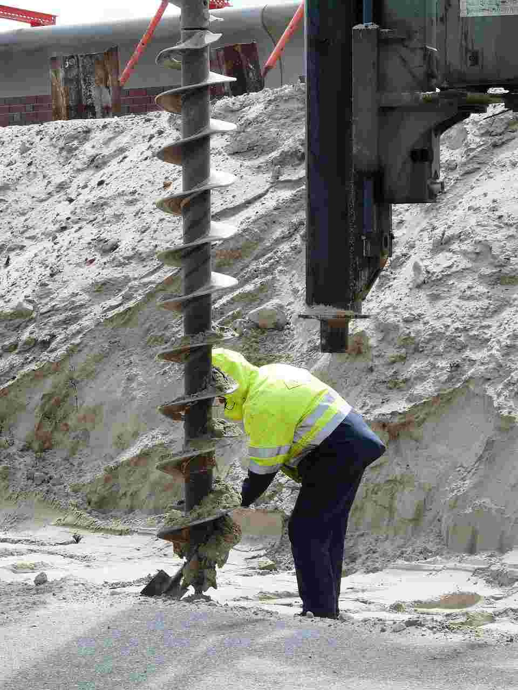
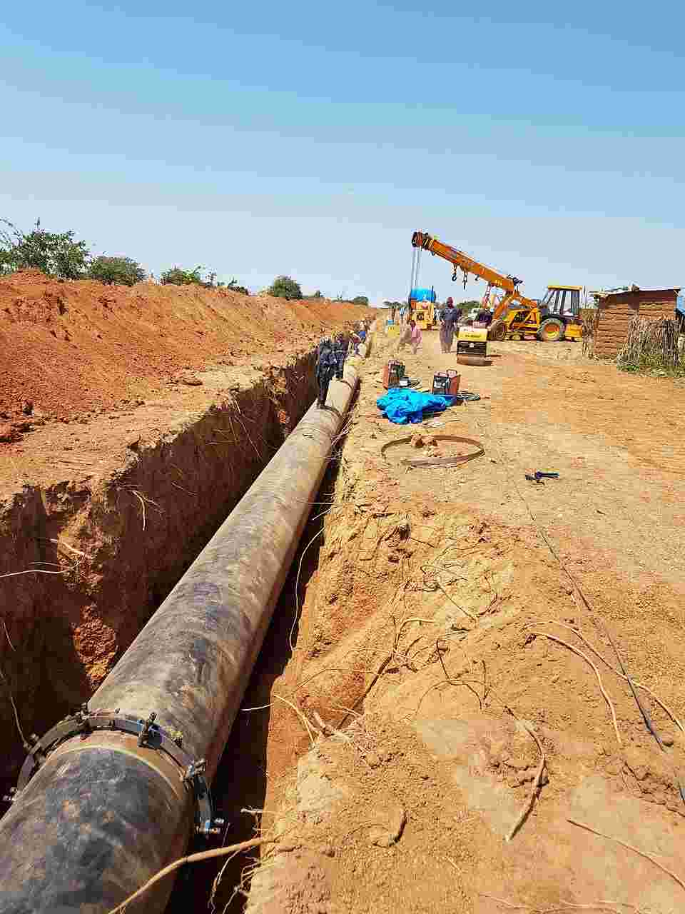
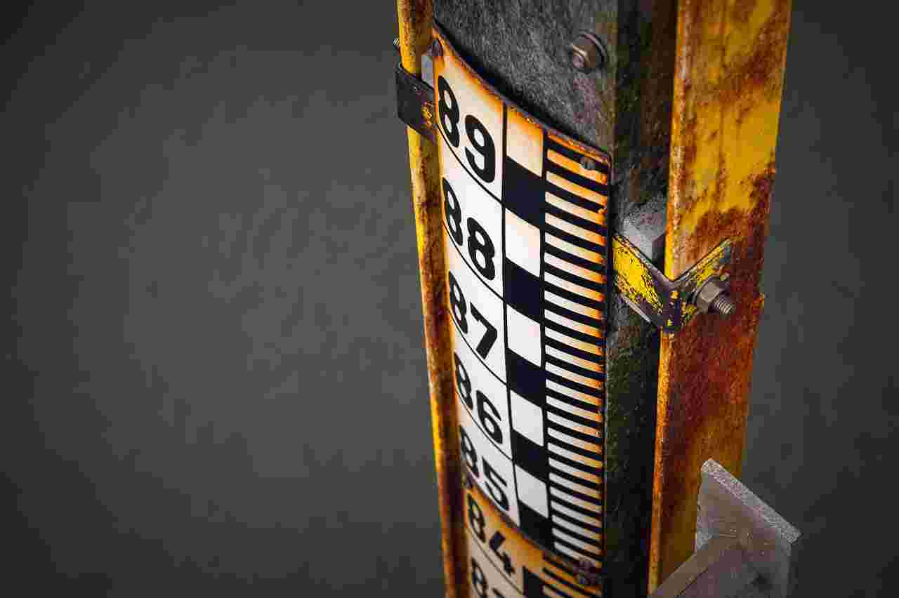
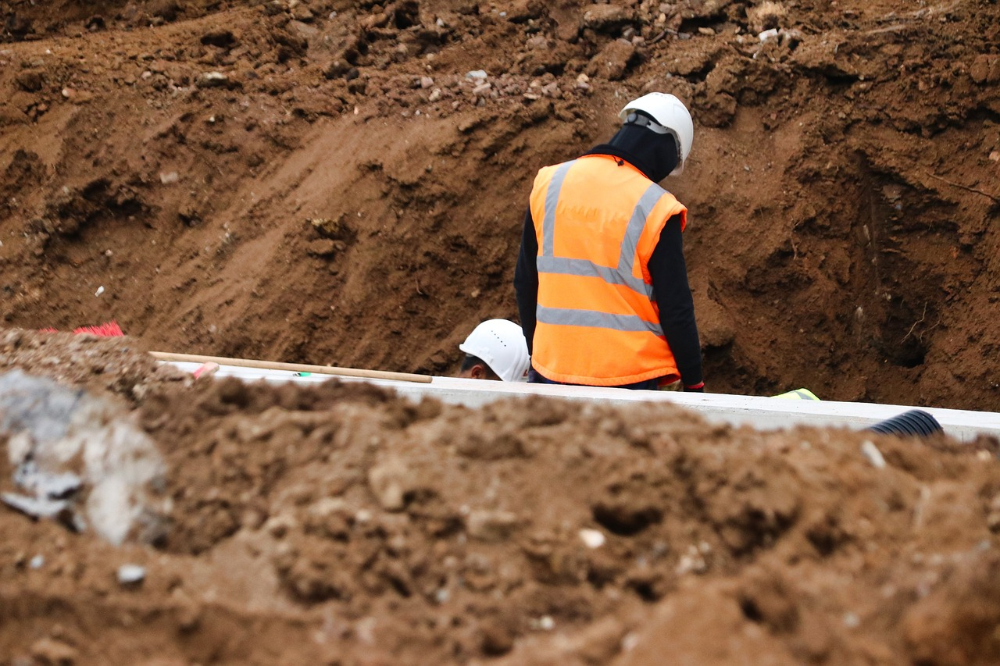
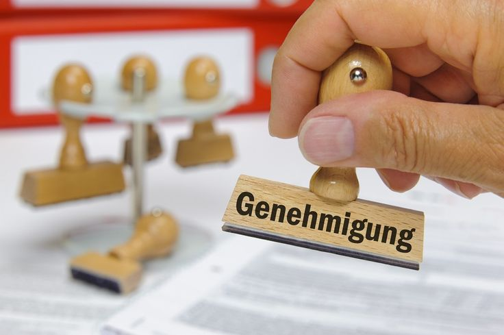
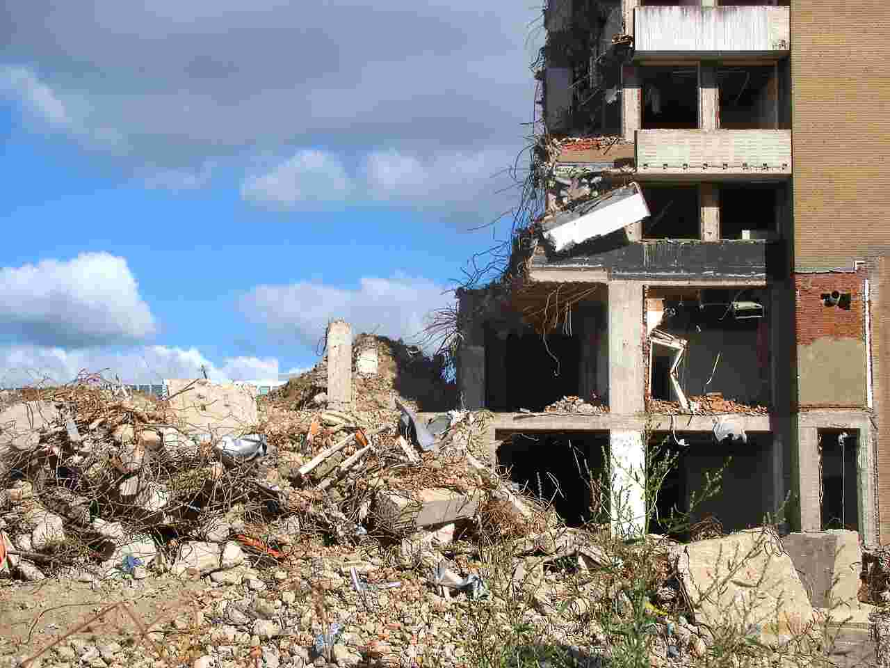
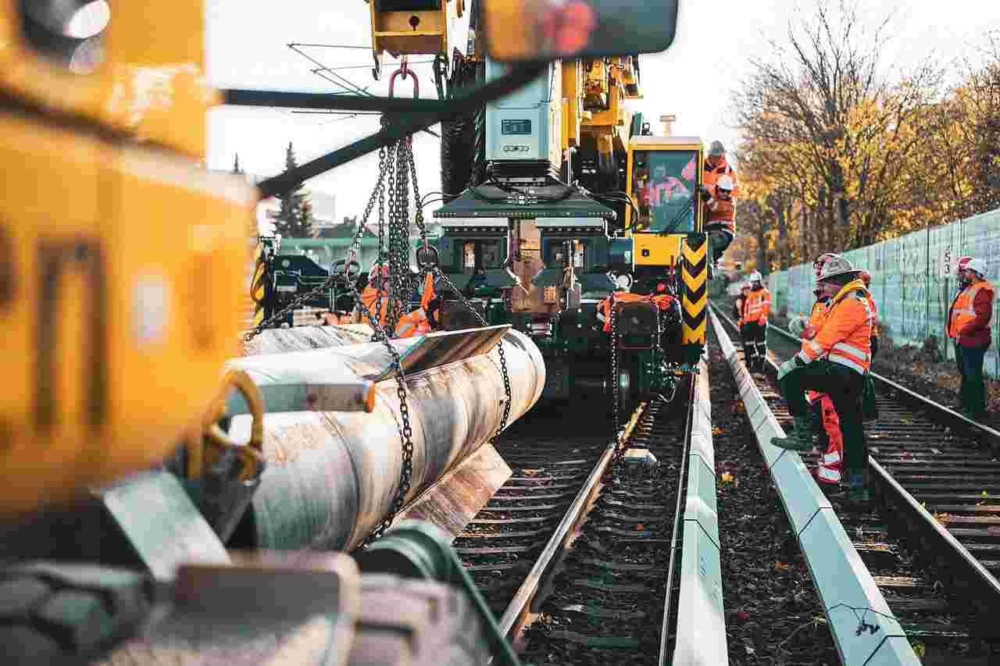
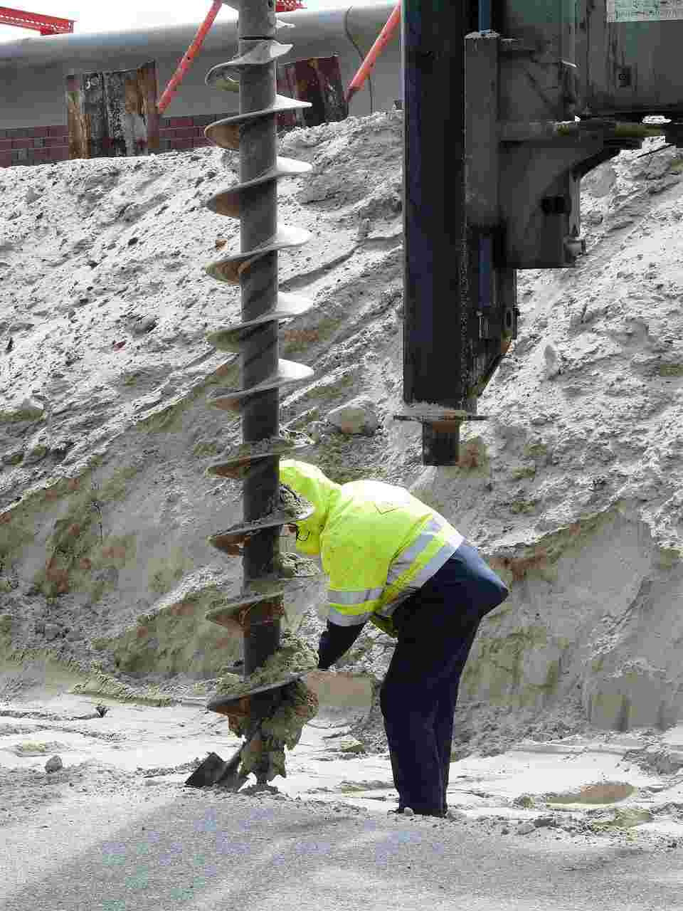
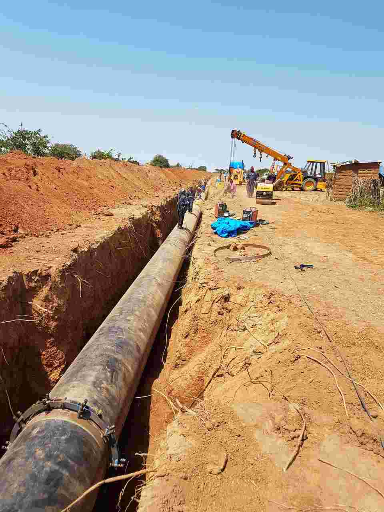
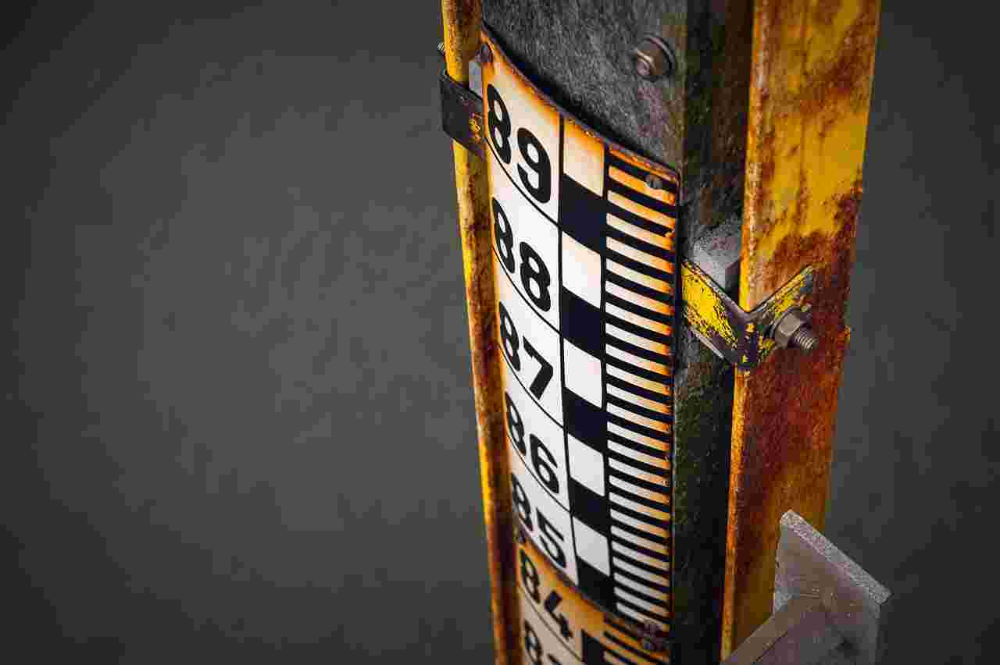
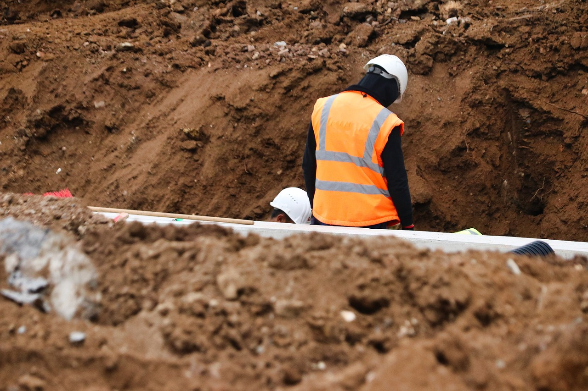
Baugrunduntersuchung
Wir analysieren die geologischen und hydrologischen Eigenschaften Ihres Baugrundstücks und schaffen so die Grundlage für eine sichere und wirtschaftliche Planung.
Mehr erfahrenAltlastenerkundung
Wir identifizieren und bewerten Altlasten auf Ihrem Grundstück und entwickeln Sanierungskonzepte – für Ihre Sicherheit und die Umwelt.
Mehr erfahrenGrundwasseruntersuchung
Von der Probenahme bis zur Auswertung: Wir untersuchen Grundwasser auf Schadstoffe und beraten Sie zu Schutz und Nutzung.
Mehr erfahrenSiGe-Koordination
Wir übernehmen die Sicherheits- und Gesundheitsschutzkoordination auf Ihrer Baustelle gemäß Baustellenverordnung.
Mehr erfahrenFachbauleitung Sanierung
Unsere Experten begleiten und überwachen Sanierungsmaßnahmen – von der Planung bis zur Abnahme.
Mehr erfahrenBeratung & Gutachten
Wir beraten Sie individuell und erstellen Gutachten zu allen Fragen rund um Geologie, Altlasten und Umweltschutz.
Mehr erfahren